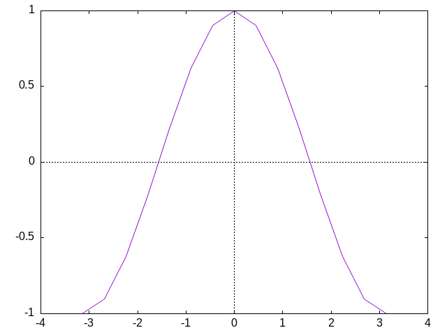

Plotting data with Emacs Calc
1. NOTICE
In this article I use Emacs notation when talking about shortcuts, here the gist of it:
C- means Ctrl or Control
M- means Meta or Alt
C-x- means pressing Ctrl together with x
M-x- means pressing Alt and x together
g f- means pressing g and the pressing f
2. How to plot data
In this period I'm studying for my Calculus II exam and I happed to need the ability to plot functions over arbitrary ranges, sometimes multiple functions on the same plot. Thankfully I can use emacs calc to solve this problem.
For example I recently needed to plot cos(x) to verify a bunch of property to solve a integral, so here how we can do that:
- Open emacs calc with
M-x calcorC-x * * - Add the x, in this case the range on which we want to plot cos(x) with
'[0..360] RET - Add the y, in this case it will the math formulae cos(x), with:
'cos(x) RET - Now we plot with
g forM-x calc-graph-fast
Here what we get:

Now if know you something about math is that angle are usually measured in radians
and not degrees, to make this happens we can use the command calc-radians-mode or
m r before we add the /x/s onto the stack:
- …
- Set radians mode with
m r - Add the /x/s like this
'[-pi .. pi] - Add the y
- Plot with
g f
Here what we get: 
3. Plotting on Wayland
If you aren't on X11 you have noticed that the plot is shown not as an
image but is drawn as text, this happen because if emacs doesn't see
the environmental variable DISPLAY set it will default to the "dumb"
device and will draw the graph in a way that can be displayed in a
POSIX terminal. To solve this you can set the device to something like
png, gif or any other "GnuPlot terminal" with calc-graph-device or g D
and set the output filename to something like "plot.png" with g O or
with calc-graph-output.
I personally set calc-graph-device to png and the output filename to
func-name_plot.png
4. Conclusion
If this small article made you curios about Calc I advise you to read
the info manual, which you can access directly in Emacs with C-H i m
Calc RET